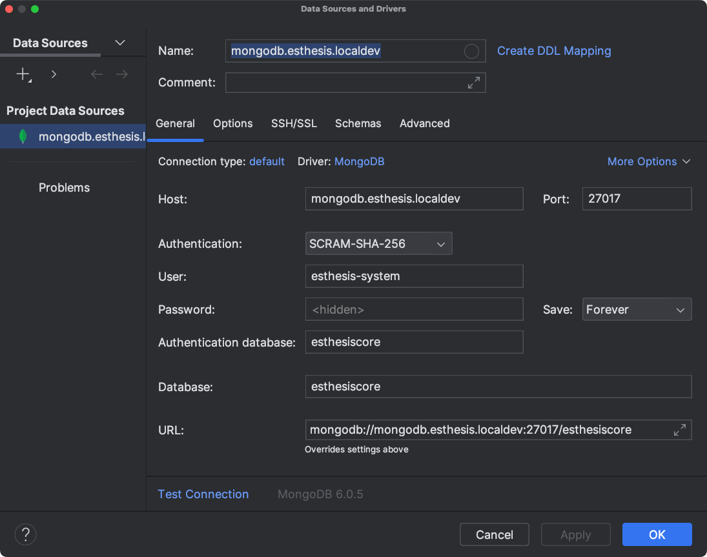
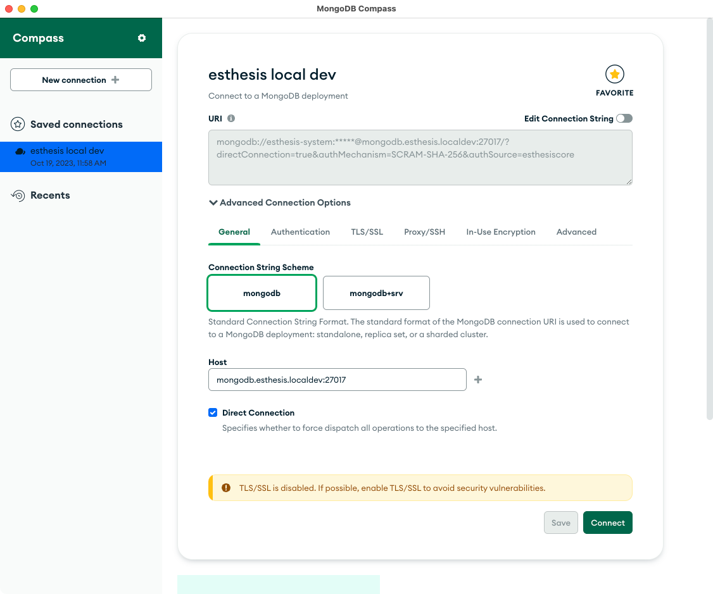
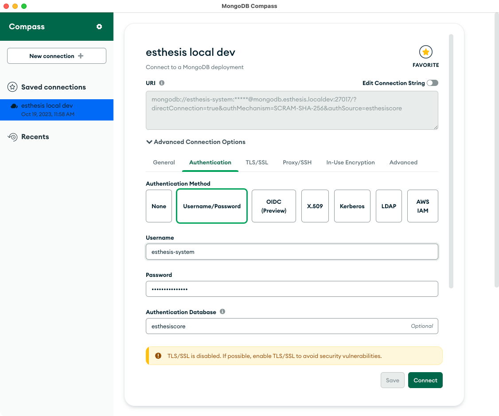

Match the IP address as well as the gateway and nameservers to your environment:
# This is the network config written by 'subiquity'
network:
ethernets:
eth0:
dhcp4: false
addresses: [192.168.2.12/24]
routes:
- to: default
via: 192.168.2.1
nameservers:
addresses: [8.8.8.8,8.8.4.4]
version: 2
Update the configuration
sudo netplan apply
Verify you got the IP defined above:
ip addr
How to connect IntelliJ to MongoDB

How to connect to MongoDB from MongoDB Compass

How to create a token in InfluxDB
Open the InfluxDB UI, e.g. http://influxdb.esthesis:8086.
Switch to the organisiation you want to create the token for by clicking on the organisation name in the top left corner.
Hover on the sidebar icon depicting an arrow pointing up.
Select 'API Tokens'.
Click on 'Generate API Token' button and choose "All Access API Token".